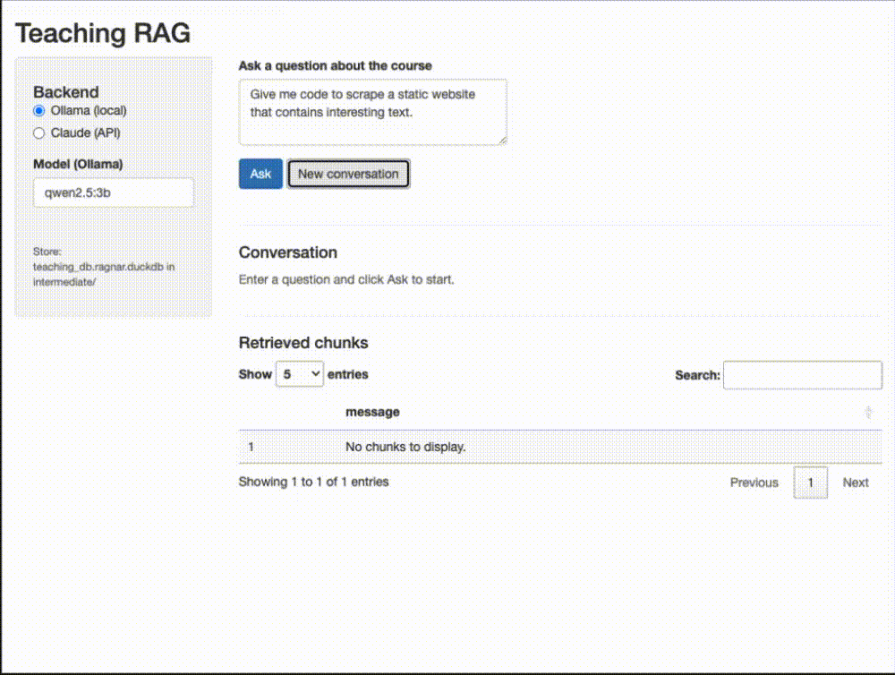
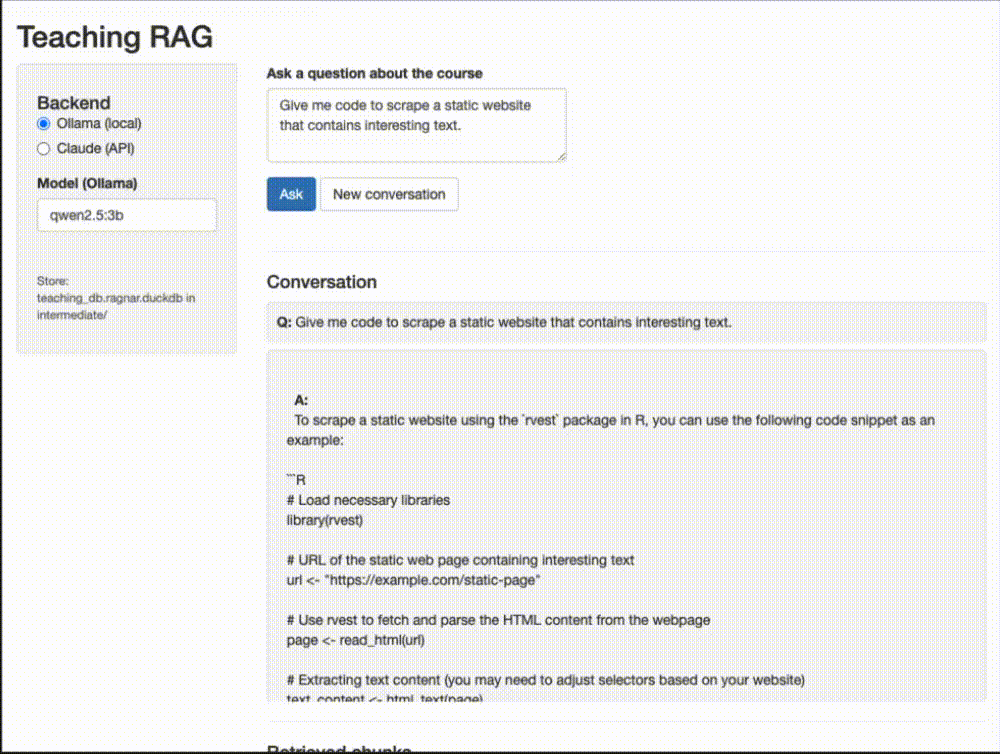
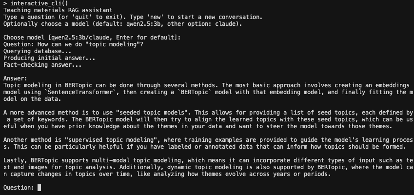

# Install from GitHub
remotes::install_github("fellennert/teachrag")
# Check dependencies (R packages, Ollama models)
# Run ensure_dependencies() to install any missing R packages
teachrag::check_dependencies()
teachrag::ensure_dependencies()A Local RAG Assistant for My Teaching Materials
Description and motivation
Teaching Computational Social Science means juggling a lot of moving parts: weekly slides, code-heavy handouts, assignment descriptions, and project guidelines. Students often have very specific questions (“Where did we talk about supervised vs. unsupervised learning?” or “What exactly did you say about OCR vs. Whisper?”) that are answered somewhere in the materials, but not always easy to find on short notice. Rather than sending them back to a generic chatbot, I built a Retrieval-Augmented Generation (RAG) system that knows only about my course and answers questions based strictly on the resources I gave them.
I packaged this into an R package called teachrag, available on GitHub. It uses the ragnar package to turn course materials into a searchable store, connects to Ollama (local) or Claude (API) for answers, and includes a Shiny app and setup wizard for interactive use.
Data source
The underlying corpus consists of teaching materials for a semester-long Computational Social Science course that was taught at Leipzig University in the fall of 2025:
- The syllabus (syllabus/, with reading lists and policies) – this is used to ensure that the answers are within the scope of the course
- Lecture slides (slides/, PDFs for intro, web scraping, optical character recognition, audio transcription and diarization, and different approaches to using text as data) – these are chunked by slide-sized chunks
- Topic-specific notebooks (script/, Quarto files such as
14_supervised_ml.qmd,17_BERT.qmd,18_GPT.qmd) and other documents (e.g.,syllabus.qmd,lecture_notes.qmd) – these are chunked by section-sized chunks
The R package ships with all underlying course materials pre-built. If you want to read through the materials yourself, I have published them on a dedicated course website. Instructors who want to use their own materials can do so via parse_materials(), build_store(), or the setup wizard (this functionality is still experimental).
The teachrag package
For students, the package provides four ways to ask questions about the course materials (all use bundled data by default):
- Single-turn (
ask_rag()) — ask one question and get an answer - Multi-turn chat (
ask_rag_chat()) — ask follow-up questions with fresh retrieval for each turn - Shiny app (
run_app()) — interactive Q&A with conversation history and retrieved chunks - CLI (
interactive_cli()) — terminal-based prompt
For instructors who want to parse and index their own materials, the package also includes parse_materials(), build_store(), and a run_setup_wizard() that guides through first-time setup.
Installation and dependencies
The package ships with pre-built course data, so you can run Q&A immediately without any setup. Install from GitHub and verify dependencies:
Before first use, ensure you have Ollama installed with qwen2.5:3b and nomic-embed-text pulled, or ANTHROPIC_API_KEY set if you prefer Claude (in the latter case you will still need Ollama and nomic-embed-text for the embeddings; you can also use the Shiny app to set up the API key). ### Asking questions
Once installed, you can query the course materials in several ways. All of these show progress: Querying database… → Producing initial answer… → Fact-checking answer…
Single-turn Q&A — ask one question and get an answer:
library(teachrag)
ask_rag("What is supervised machine learning?")Querying database...Producing initial answer...Fact-checking answer...Based on the provided context, supervised machine learning refers to a type of machine learning where an algorithm learns from labeled training data. The term "supervised" comes from the idea that there's a supervisor or teacher guiding the process by providing correct answers (labels) for each input in the dataset. This allows the model to learn patterns and relationships between inputs and outputs, which can then be used to make predictions on new, unseen data.
In the context of computational social science mentioned, supervised machine learning is seen as part of a broader set of machine learning techniques that can be applied to analyze text data. The process involves developing a coding scheme based on prior theory, reading texts, and deciding annotations according to this scheme for all documents. This labeled dataset then serves as input for the model during training.
The context also mentions computational tools like tidymodels which provide functions such as `textmodels::step_word_embeddings()` that can be used with pre-trained models or even trained on multiple corpora to identify different biases, further emphasizing how supervised machine learning is a part of the toolkit available in computational social science for analyzing text data. Multi-turn chat — ask follow-up questions and keep context. Note that the chat state is stored in the chat_state object and passed to the function to keep track of the conversation history. Furthermore, I set the temperature of the LLM to 0.1, meaning that the model will be more creative and less deterministic in its answers – i.e., the same question will likely yield a slightly different answer each time. Document retrival is deterministic, meaning that the same question will always be anwered “based” on the same information.
chat_state <- NULL
res1 <- ask_rag_chat(chat_state, "What is supervised machine learning?")Querying database...
Producing initial answer...
Fact-checking answer...chat_state <- res1$chat_state
cat(res1$answer)Based on the provided context, supervised machine learning refers to a type of machine learning where an algorithm learns from labeled training data. The term "supervised" comes from the idea that there's a supervisor or teacher guiding the process by providing correct answers (labels) for each input in the dataset. This allows the model to learn patterns and relationships between inputs and outputs, which can then be used to make predictions on new, unseen data.
In the context of computational social science mentioned, supervised machine learning is seen as part of a broader category that includes ordinary least squares (OLS), even though OLS might not always be explicitly referred to as machine learning. The materials suggest that there are computational tools and methods available to help with tasks like developing coding schemes for text analysis, which can be considered a form of "supervision" in the context of training models on labeled data.
So, in summary, supervised machine learning involves using labeled datasets to train algorithms so they can make predictions or decisions based on new, unseen input.res2 <- ask_rag_chat(chat_state, "How is it useful for social science research?")Querying database...
Producing initial answer...
Fact-checking answer...chat_state <- res2$chat_state
cat(res2$answer)Based on the provided context, Transformer models like GPT (Generative Pre-trained Transformer) are used in social sciences to address several challenges related to data annotation and bias. Specifically:
1. **Reducing Annotation Costs**: The use of LLMs (Large Language Models) can lower the cost associated with manual annotation by researchers or assistants. This is because fewer, but more accurate annotations made by experts using these models can be used instead of a larger number of potentially biased annotations from research assistants.
2. **Validation and Quality Control**: Researchers are interested in how training data generated by them (which might include expert annotations) compares to data generated by research assistants or microworkers. This comparison helps ensure the quality and reliability of the data being used for analysis.
3. **Sequence Extraction**: Transformer models, like GPT, can be useful for extracting sequences from text data, which is relevant in various social science applications where understanding sequential patterns (e.g., time series data) is important.
In summary, these models are seen as tools that help manage the complexity and cost associated with manual annotation while potentially improving the quality of annotations. They also facilitate the extraction of meaningful information from textual data, aiding researchers in their analysis and interpretation of social phenomena.Shiny app — this provides an interactive Q&A with conversation history and retrieved chunks, plus a sidebar to choose Ollama (local) or Claude (API key):
run_app()You can ask a brief question and get an answer:

…or ask a follow-up question and get an answer that also takes into account the previous question.

CLI — interactive prompt in the terminal:
interactive_cli()
Architecture
My goal was to create a system that is: - easy to use for students and instructors - easy to extend to other courses and materials - easy to maintain and update - easy to deploy and scale - not prone to hallucinations and other LLM-related issues
To achieve this, I implemented the following steps:
Parse: Discover files (qmd, Rmd, md, pdf), convert to markdown via
ragnar::read_as_markdown, chunk by doc type (slides by" --- ", breaking them up into slide-sized chunks, scripts by"##"and"###", breaking them up into section-sized chunks), and then writesyllabus.rdsandchunks.rdsto the output directory.syllabus.rdsis later fed into the LLM to ensure that question and answer are within the scope of the course – I did not want to make this a general chatbot.Build store: Read chunks, reformat for ragnar, create DuckDB store with
nomic-embed-textembeddings via Ollama.Query:
ask_rag()retrieves relevant chunks with BM25, formats context, sends to the LLM; a content checker (based on either Claude or a local model) ensures questions and answers are within scope using the syllabus summary.Multi-turn:
ask_rag_chat()keeps the same chat session and retrieves fresh chunks for each follow-up question so answers stay aligned with course content.
Requirements
- R packages:
dplyr(>= 1.2.0) and others (see DESCRIPTION). Runteachrag::check_dependencies()to verify, orteachrag::ensure_dependencies()to install missing packages. - Ollama with models
qwen2.5:3bandnomic-embed-text(for local Q&A and embeddings). - Claude API (optional): if you prefer Claude via API, set
ANTHROPIC_API_KEYin your environment. You will still need Ollama andnomic-embed-textfor the embeddings.
Summary
This project turns a semester’s worth of teaching materials into a focused RAG system. The teachrag package ships with pre-built course data, so students can install it, check dependencies, and start asking questions immediately — via single-turn Q&A, multi-turn chat, a Shiny app, or the CLI. Answers are grounded in the course materials and fact-checked against the syllabus. The system is intentionally modest: it does not try to be a general-purpose assistant, but rather a guided search and explanation tool over a well-defined corpus. The code is available as an R package on GitHub.